Cris Brenes
{kind=link}
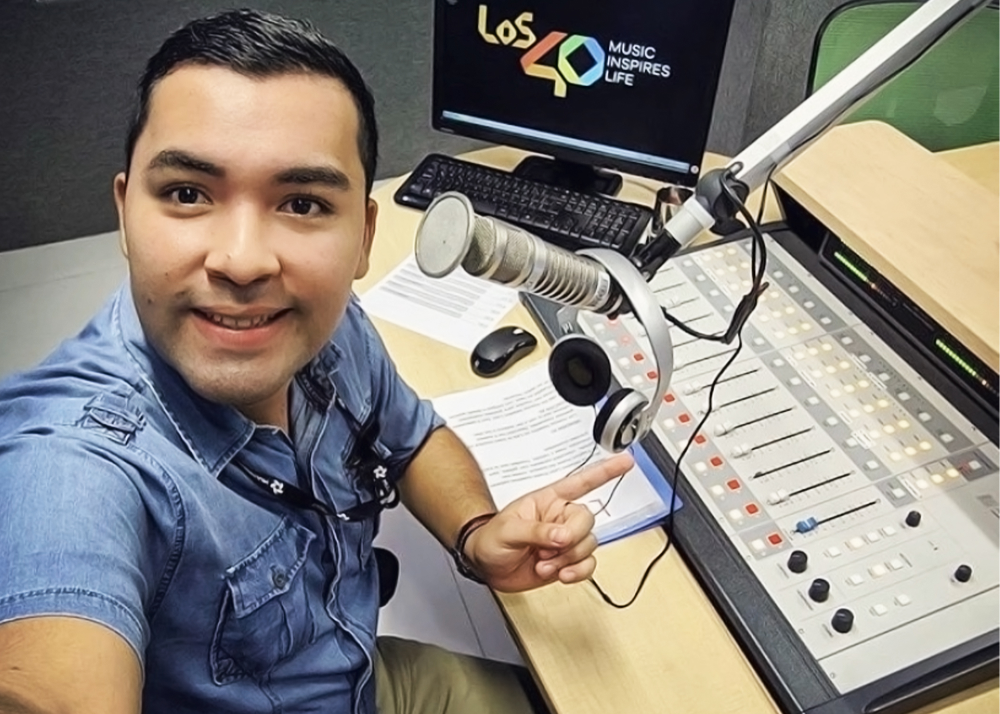
Desde la cabina de los 40 en Multimedios.

Greeicy, un ser humano impresionante y gran artista

La felicidad de estar en la cabina

Un reencuentro especial con Abraham Mateo.

Certamen de belleza de Lajas.

Mi primer básico 40 en dirección junto a la mexicana Sofia Reyes
{kind=link}
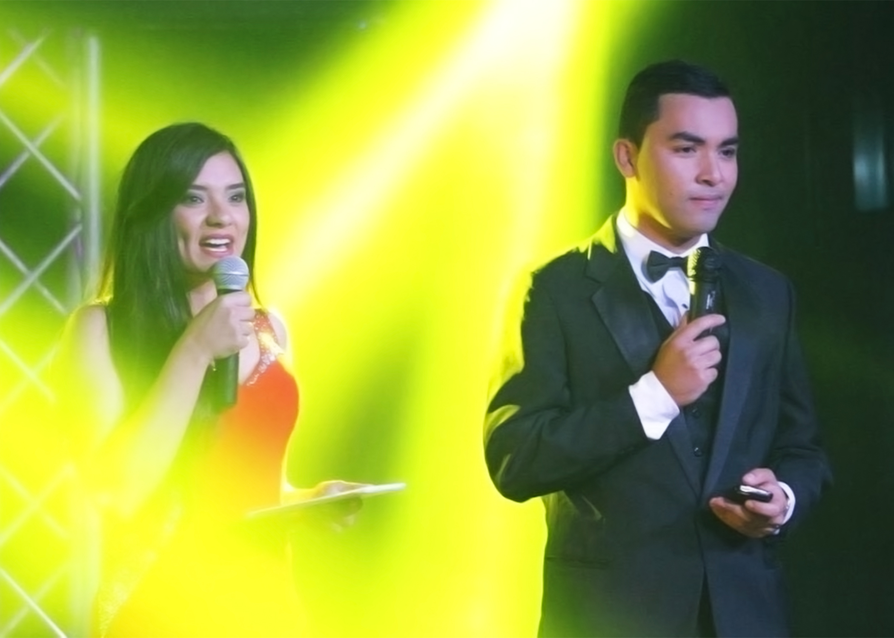
En conducción con Scarlet Corea, certamen de belleza de Lajas.
{kind=link}
Jorge Blanco en su paso a entrevista en Los 40 conmigo.
{kind=link}
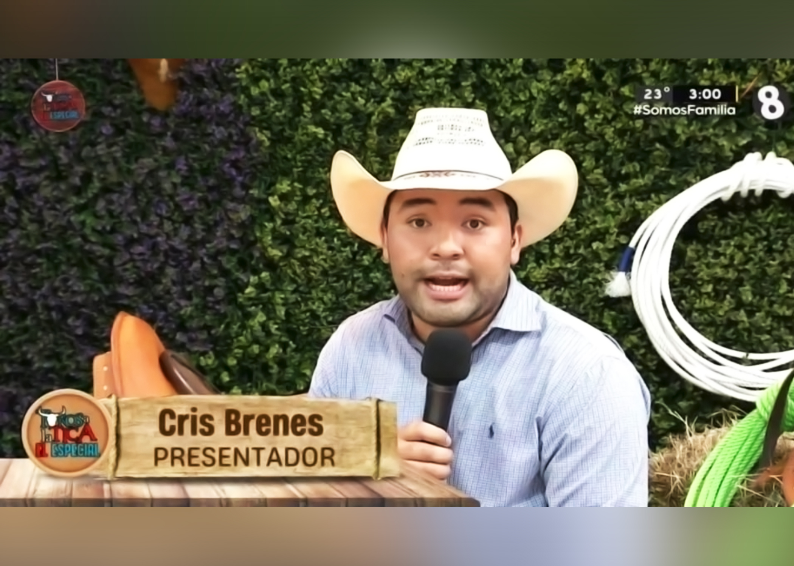
Programa especial de toros a la tica.
{kind=link}
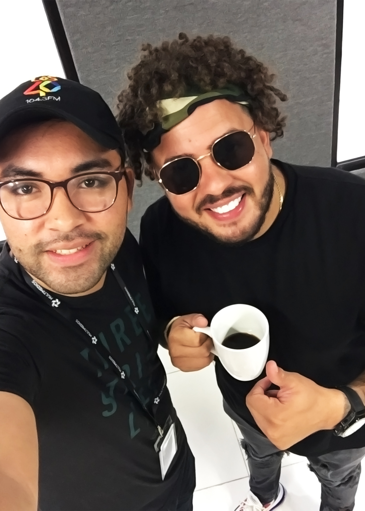
Maffio tomaba café tico y me presentaba Cristina.

Teleton 2022.

Karol G antes de alcanzar la fama mundial.
{kind=link}
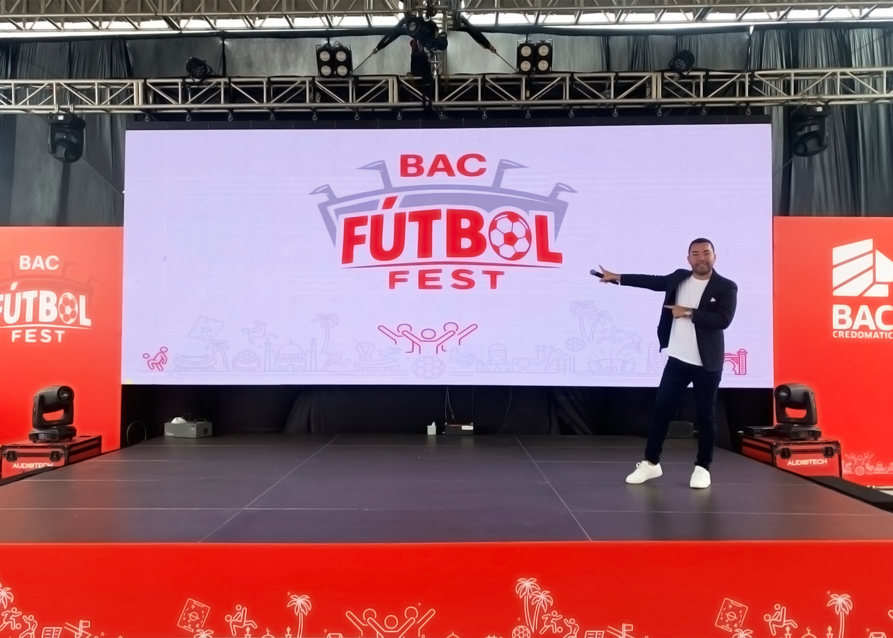
Época Mundialista para Bac Fútbol Fest.
{kind=link}
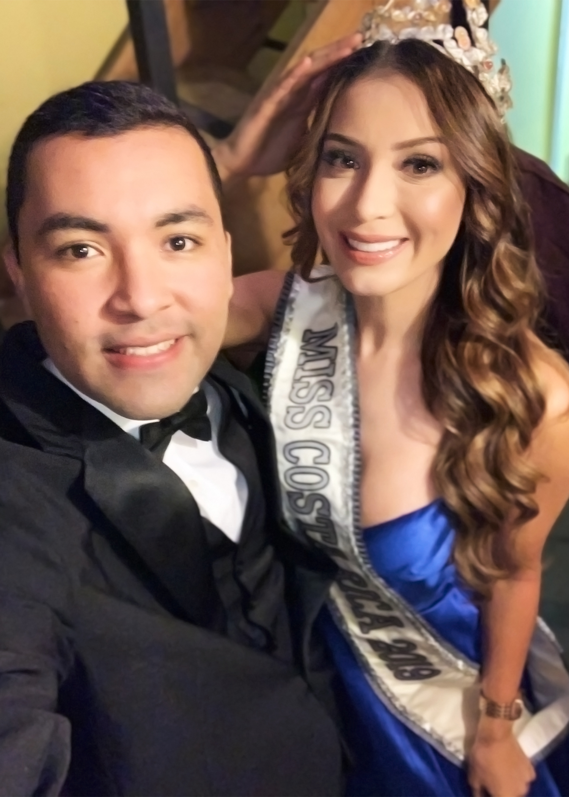
Miss Costa Rica, Paola Chacon en Expo Zarcero 2020.
Desde la cabina de los 40 en Multimedios.

Abraham Mateo fue mi primer artista internacional por conocer en Los 40.
{kind=link}
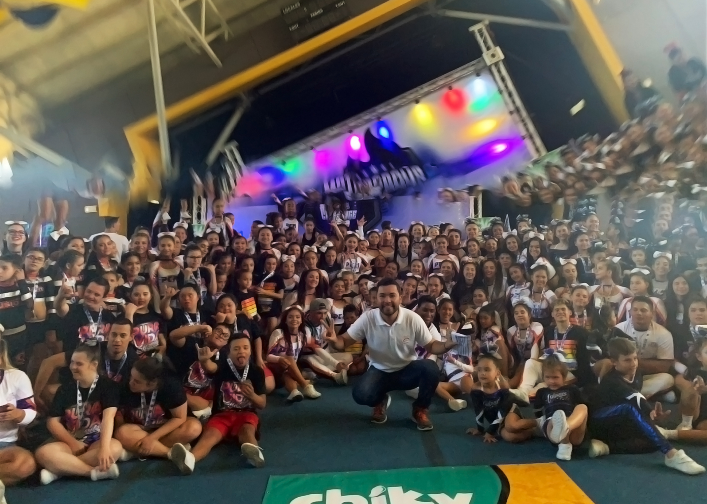
En la conducción de festivales de gimnasia y coreografías
{kind=link}
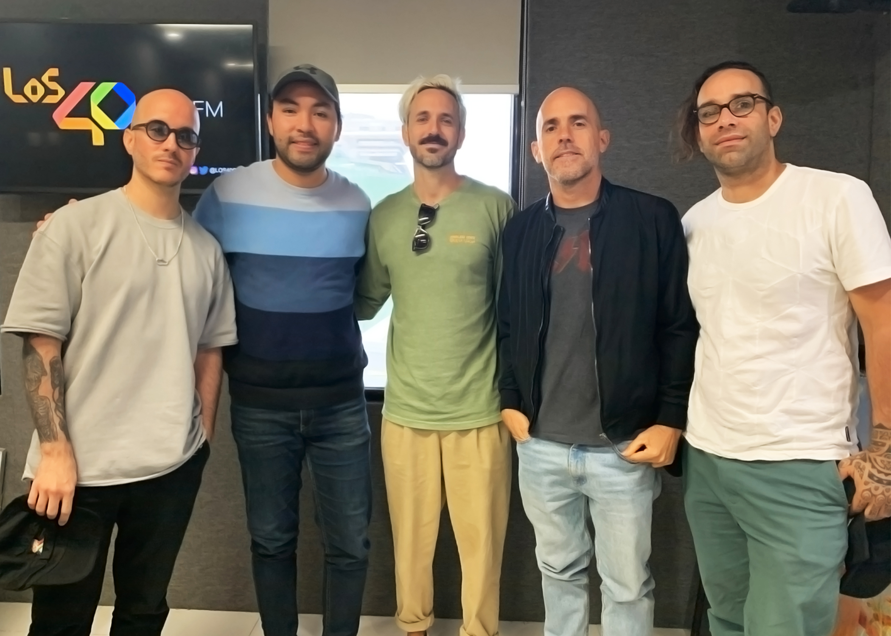
Siempre es bonito toparse a Cultura Profética para entrevista.
{kind=link}
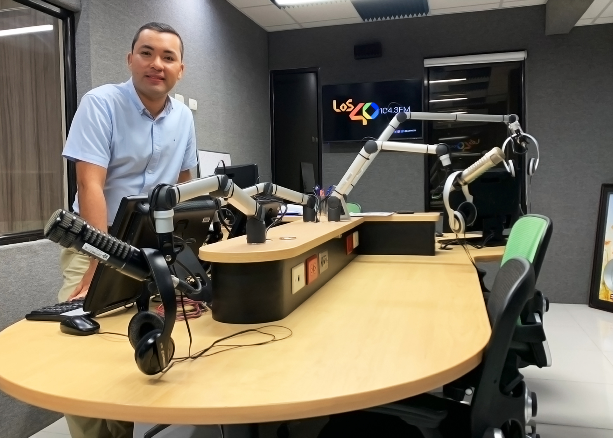
Listos previo a Presa 40.

Presentando a Jean Carlos Canela en el Teatro Nacional.

Las giras de coles es lo más divertido.

La entrevista que tanto quería, Karol G en su momento más grande de Fama.

Desde la movil de transmisión de canal 8 en los toros a la tica de fin de año 2022.

Mike Bahía que gran artista
{kind=link}
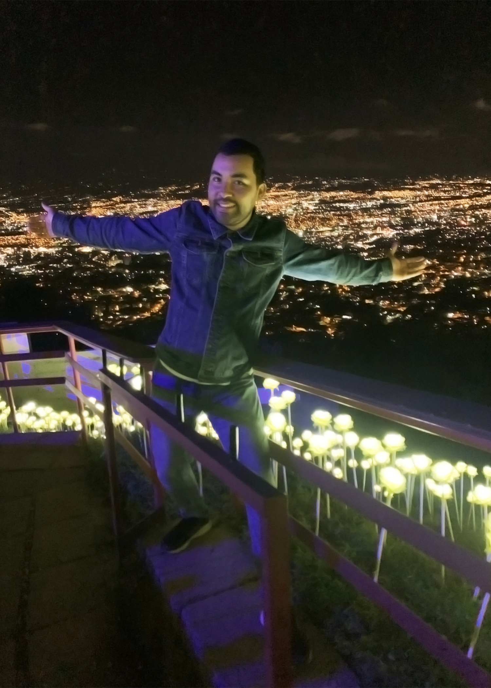
Una vistada a Cartago, San José y parte de Alajuela desde acá
{kind=link}
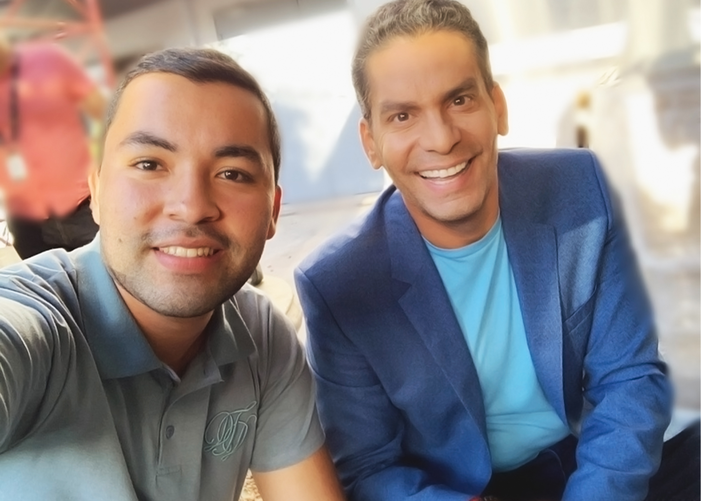
Un gran periodista Ismael Cala, buena charla en su visita a Canal 8, Multimedios.
{kind=link}
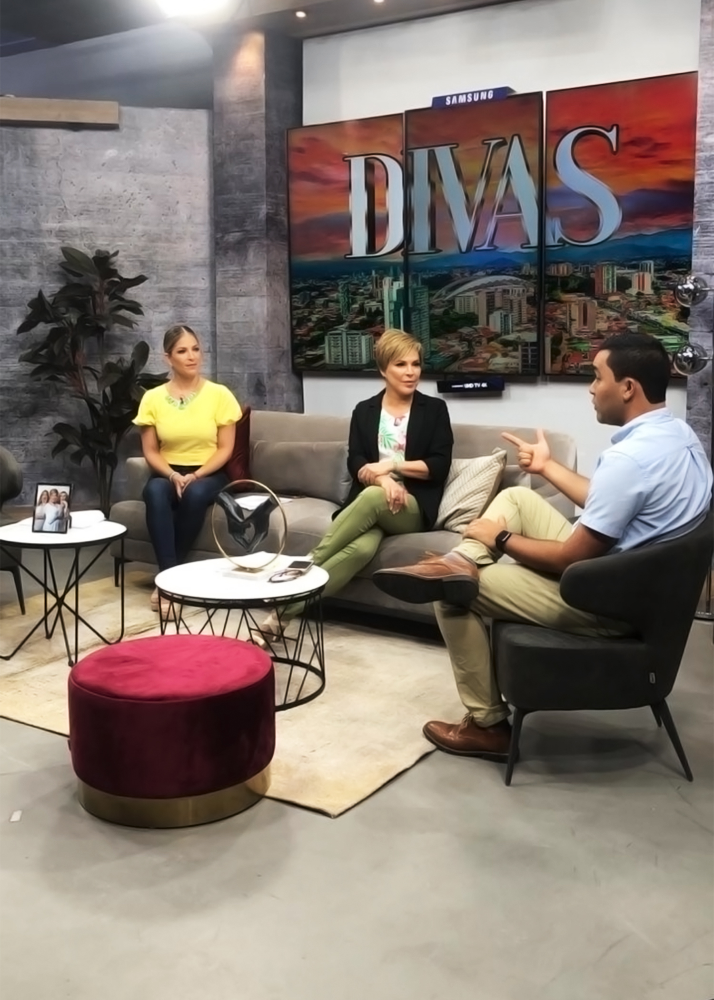
Inspirar a otros a llegar a cumplir sus sueños, Divas Canal 8.
{kind=link}
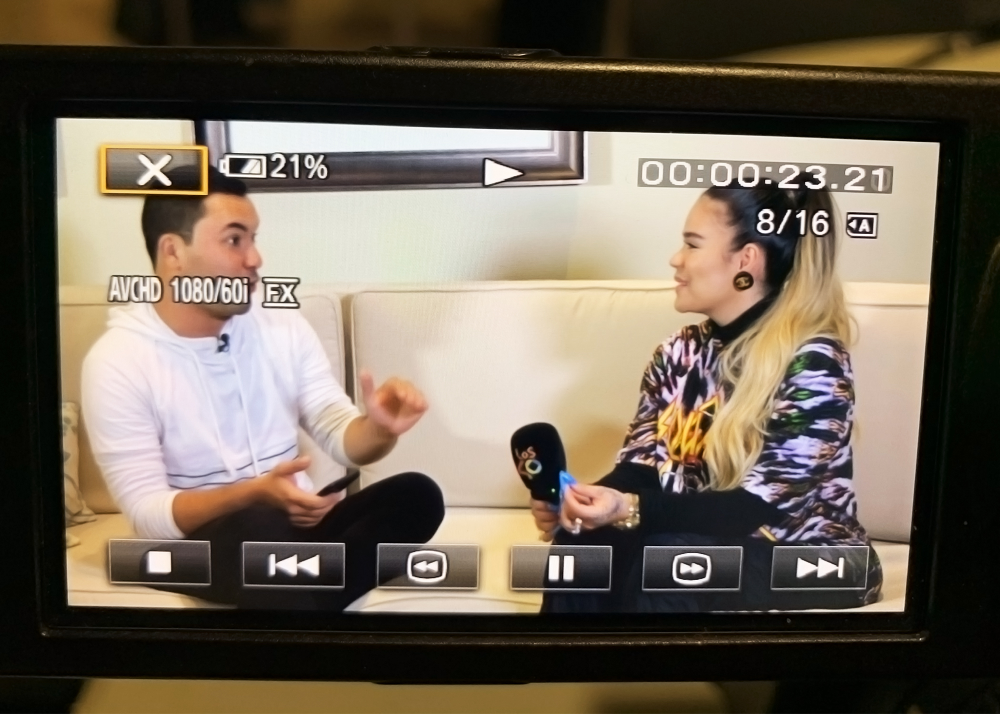
Fue una entrevista exclusiva en Costa Rica con Karol G.